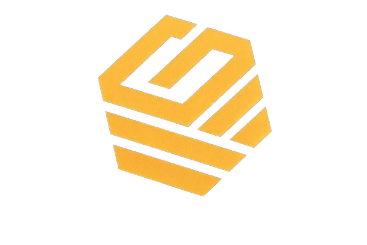
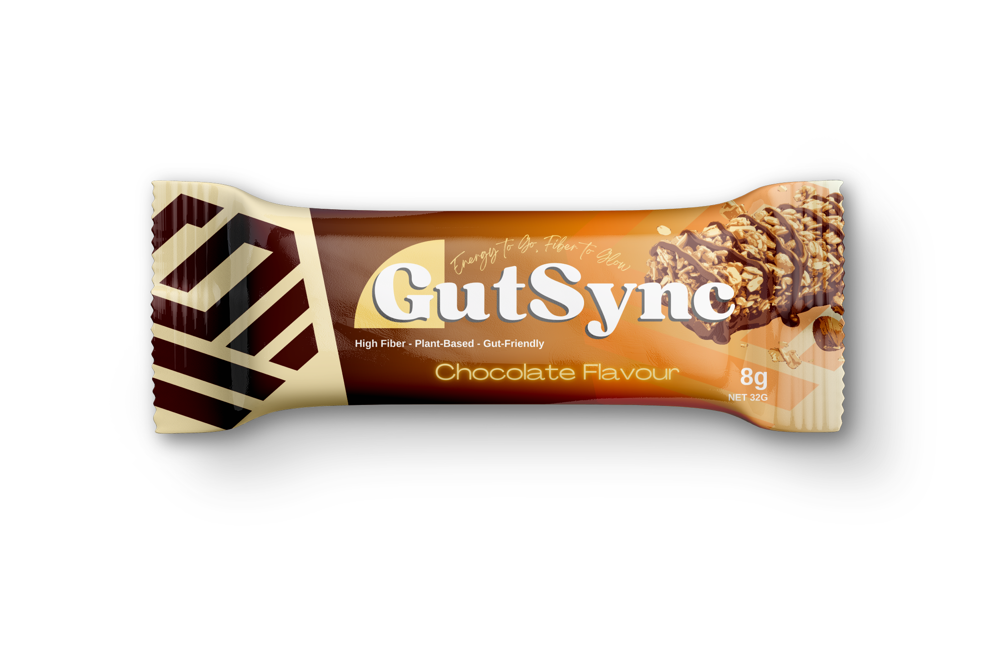

Revolusi ngemil sehat dengan kebaikan tempe Nusantara. Enak, praktis, dan bersahabat untuk ususmu.
GutSync lahir dari kepedulian terhadap gaya hidup modern yang serba cepat, di mana kesehatan pencernaan sering kali terabaikan. Kami memadukan kearifan pangan lokal—Tempe—dengan inovasi snack bar modern.
Menjadi pelopor camilan sehat berbahan dasar nabati lokal yang mendunia dan mendukung kesehatan pencernaan.
Menyajikan snack bar yang praktis, menggunakan 100% bahan alami, tinggi serat, dan ramah bagi vegan.
Kaya serat alami dari kedelai utuh untuk melancarkan pencernaan dan kenyang lebih lama.
100% nabati. Pilihan camilan sempurna untuk gaya hidup vegan dan vegetarian tanpa susu sapi.
Proses fermentasi menghasilkan prebiotik alami yang merawat mikrobioma ususmu.

GutSync Bar perpaduan sempurna antara kebaikan tempe panggang renyah dengan balutan cokelat hitam premium.
"Akhirnya nemu snack bar yang ngenyangin tapi nggak bikin perut begah. Rasanya unik dan enak banget!"
"Sebagai vegan, GutSync ngebantu banget buat asupan protein harian setelah nge-gym. Dark choco favoritku!"
Tertarik untuk menjadi distributor atau sekadar ingin bertanya? Sapa kami!
📧 gutsync@co.id | 📱 +62 812-3456-7890